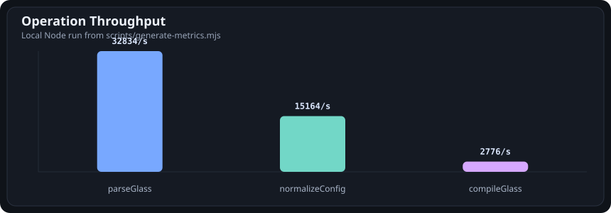
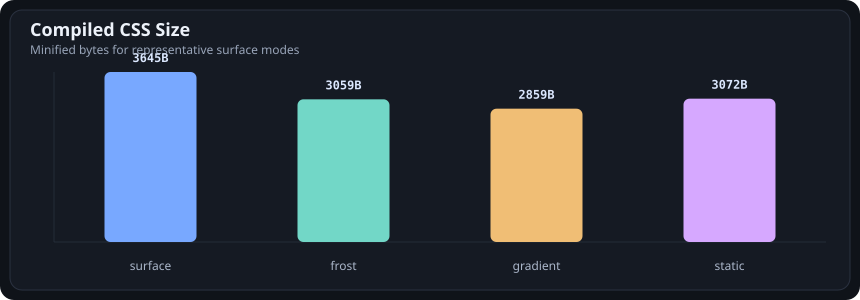
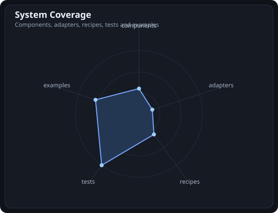

Production glass surface system
Engine, adapters, components, SSR helpers, and measurable output.
This repository site is the technical lab for GlassGradients. It shows generated performance data, static CSS output, component primitives, integration coverage, and runtime behavior.
package1.1.0
tests50
adapters11
components20
Generated data
Performance and package metrics
Generated by npm run metrics. The charts are committed so GitHub can show behavior without
running a build.



Official primitives
Components built from the same recipes and tokens
React and Preact components are thin wrappers over the same engine. Core helpers can generate props, tokens, and static CSS for other stacks.
Workspace shell
Stable surface for product layouts, sidebars, and editor-like interfaces.
Command center
Focused, strong-contrast surface for search, shortcuts, and command overlays.
Terminal shell
Static-first, high-contrast frost for CLI output, logs, and technical previews.
Data grid
Dense recipe with safe contrast and minimal grain for scanning structured data.
Adapters
Framework matrix
Adapters are optional subpaths. The core package stays framework-agnostic.
import { GlassCommandPalette } from "glassgradients/components/react";
import { createGlassTailwindPlugin } from "glassgradients/adapters/tailwind";
import { createNextGlassThemeScriptProps } from "glassgradients/adapters/next";Runtime test
Switch surface mode without rebuilding CSS
The runtime lab imports the built site source when served over HTTP. It falls back to static preview on file URLs.
waiting
Live surface
Update mode, recipe, and strength. The runtime keeps the same DOM node and updates CSS variables.
QA
Test matrix
Repository checks cover parser, compiler, runtime, themes, adapters, components, package exports, and SSR helpers.
parser
compiler
runtime
theme
components
tailwind
unocss
ssr
package exports